Reached the grove
Finish the opening on The Hauzer: grab the four anchors with the Megapon and watch the cutscene.
Every card is an achievement. Tick it when it pops in-game; the route underneath is the short path to that one achievement.
Order: Sections run in walkthrough order — Grove Cove, Milldread, HobbyHoo, BuzzHuzz, then the finale — and achievements sit where the walkthrough describes them popping. A few miscellaneous ones (the rabbits, the beach ball, the videos) are placed at the walkthrough moment that triggers them; chapter-end achievements may pop slightly earlier or later than listed.
Scope: All 42 achievements / 1,000G — the full game. One playthrough covers everything if you use the cloud-save trick for the two deputy answers in Chapter 1; completed chapters can also be replayed from their start.
Reached the grove
Finish the opening on The Hauzer: grab the four anchors with the Megapon and watch the cutscene.
..!
After landing, interact with the black bunny on the left of the entrance gate.
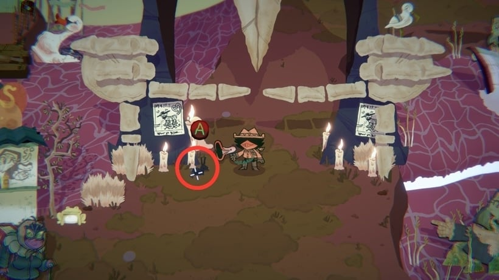
Met da God of Leadership
Go through the lit door into the van and meet Inspekta.
Time for a snack break
Shoot the BizzyBoy blocking the bridge with 'Lay off and take a snack break! That's an order'.
Y-you really l-love hearing a bookish g-girl ramble, huh?
Keep the historian by the riverbank dry with the Megapon while you talk through all her dialogue.
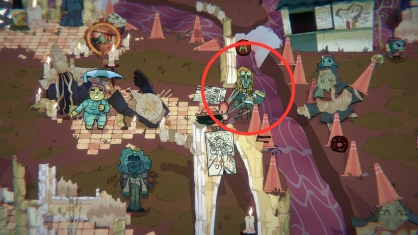
Met the eldest god
Clear the wood from the yellow-glowing door and meet Miss Mitternacht inside.
Watch the first video by the BizzyBoys
Across the repaired bridge, use the front TV in the cluster and watch the first BizzyBoy video — it pops when you exit the screen.
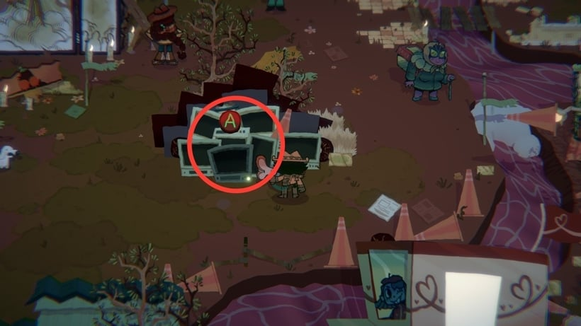
Cheer up Miss Mitternacht
Cheer her up: deliver Razzmatazz's line, then 'With the power of communication, I can bring the gods together!', and answer yes.
Let's solve this miss-turr-ee!
At the end of the chapter, answer yes to staying Inspekta's deputy. Use the cloud-save trick — quit, delete only the local save, reload — to get both deputy answers in one run.
I'm not yer deputy, mister.
At the end of the chapter, answer no to staying Inspekta's deputy (see the cloud-save note on Good Little Deputy).
Reach the town of perpetual sunset
Follow the path up from Grove Cove into the town.
Ham.
Take 'I thought this place had barbeque, WHERE'S THE SMOKED HOG?' from Capochin and shoot it at the pig by the brush.
Watch the second video by the BizzyBoys
In the bakery, use the TV on the right and watch the second BizzyBoy video.
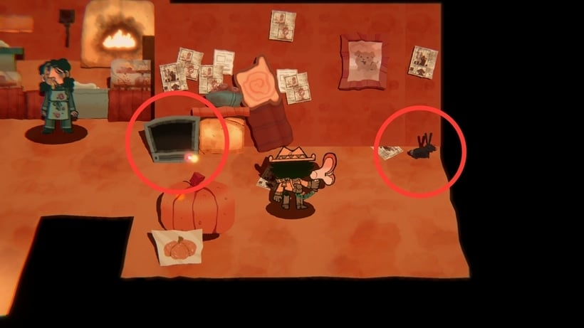
Meet the God of the Harvest
Clear the bookshelf in the school's back room and meet Cobigail.
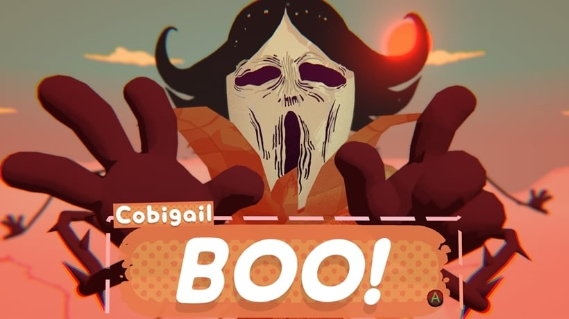
Remove somebody's hair
Take 'GET A HAIRCUT!' from Capochin in the school and shoot it back at him.
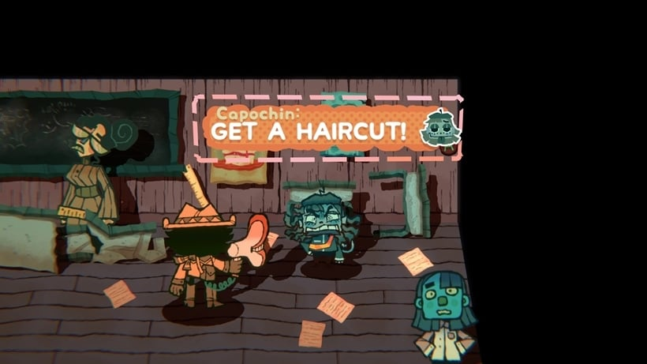
Helped Capochin and Razzma argue
Run the insult chain between Capochin and Razzmatazz to the end — the final insult, delivered to Razzmatazz, pops it.
Teach Milldread the meaning of the Harvest
Stop the sacrifice: give Cobigail the Milldread Berry, have the Bayker make jam from it, then shoot Saul with the jam.
Sneezed
After the sacrifice is stopped, take the Bayker's 'ACCHOOOOO!' and shoot it anywhere.
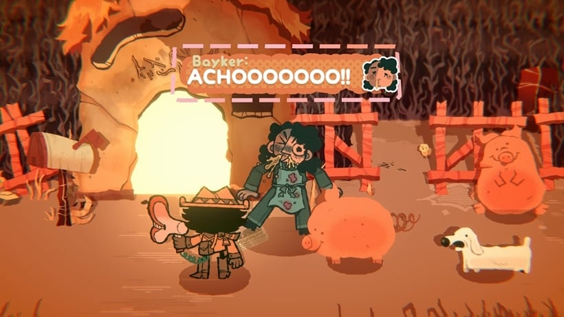
Arrest that 'poke!!!
Clear the first BizzyBoy battle on the path out of Milldread.
Reach the HobbyHoo Hills
Follow the path up from Milldread into the hills.
Meet the Songwriter God
Enter the tent with the glowing yellow door and meet Thespius.
Watch the third video by the BizzyBoys
In Clicky Tower, use the TV and watch the third BizzyBoy video.
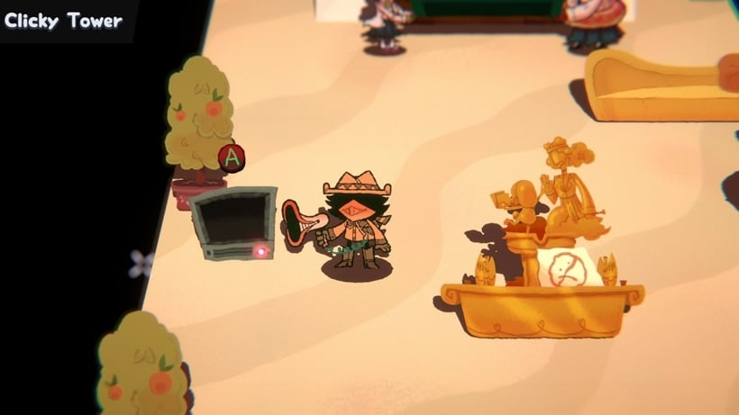
Meet the Storytelling God
In Clicky Tower, find Click Clack and shoot him with 'Whoof, I think it's time for some editing.'
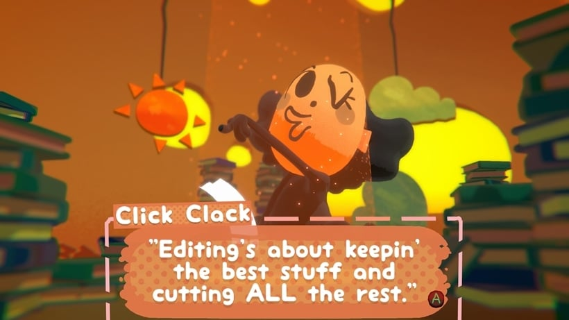
Get in trouble with Styella
Apologise to Styella with her two phrases, in order: the 'sahry for callin' yoah face ugly' line, then the 'piece of human gahbage' line.
....!!
Above Byoolah, interact with the third rabbit.
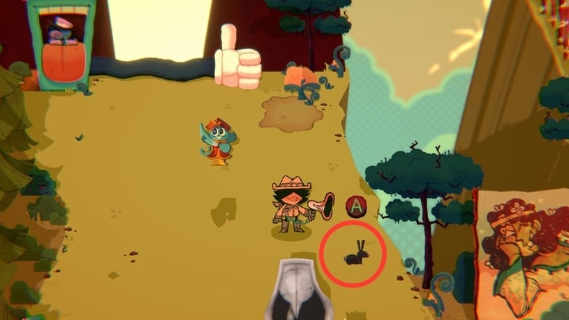
Question Capo's authority.
In the Soul Cricket, shoot Capochin with 'NO MORE CAPO! TIME TO SEIZE THE MEANS OF DEDUCTION!'
Listen to an entire story from Patience
In the Soul Cricket, listen to Patience's whole story, and confirm you're still listening when she asks.
Give HobbyHoo a performance for the ages
Finish the stage performance: purple bulb in the switch, the Episode XIV script to Hersha, then watch from the audience pillows.
Confess a crush to the storyteller god
After the performance, take Daffodil's 'I'm HAM-HOT for a handsome god!' to Click Clack and pick another god as your date.
Reach BuzzHuzz Plaza
Follow the path from HobbyHoo into the plaza.
Fed the beach ball to Alexei again
Feed Alexei the beach ball again — he lounges under the umbrella by the sandbags.
Bauhauzzo will remember this.
In Bauhauzzo's room, shoot him with 'GETSCRAMLOSTGONE!'
Meet the God of Memory
Leave Bauhauzzo's room after the alley-phrase exchange.
Confuse Bananathaniel
Shoot Bananathaniel with Bauhauzzo's 'I order you to open this alley!' and play out his dialogue.
Meet the God of Invention
Enter the glowing door in the alley and meet Huzzle Mug.
Give the god of invention a corsage
Shoot Huzzle Mug with the Azure Rose and say yes to the Promdance.
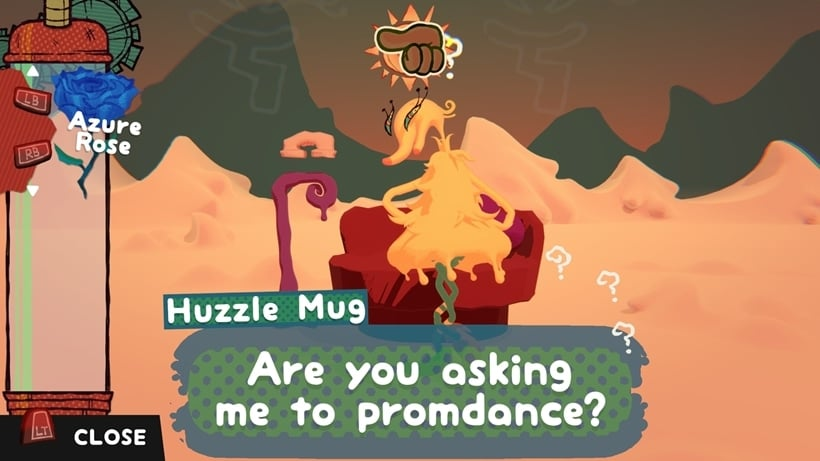
Feed il gatto
Catch the Pink Herring jumping from the pool and shoot it at Veronicat.
Watch Capochin's homemade video
In the BizzyBoy Barracks, use the TV and watch Capochin's homemade video.
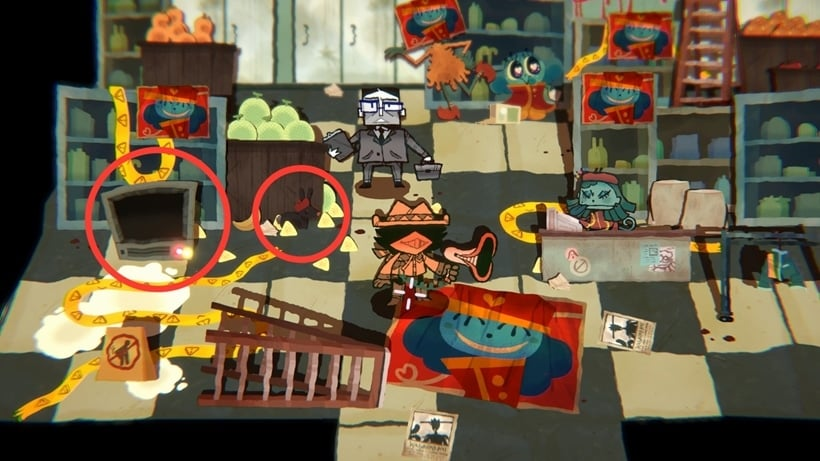
Bring art back to BuzzHuzz
Finish the plaza: uniform on the statue model, then 'NO USELESS GODS. ONE LEADER'S PLENTY!' at the statue base to open the top.
Meet the Eloquent God
After the teleport in the finale, walk forward and meet The King.
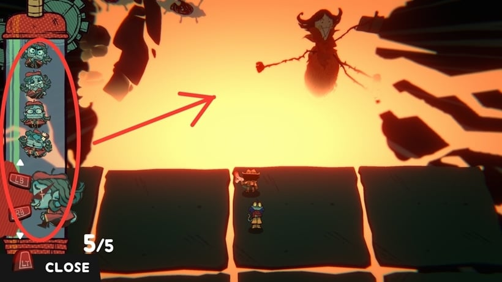
Sources: achievement names, requirements and Gamerscore from the achievement list linked below; route notes are short paraphrases of the linked walkthrough — the full guide text is not reproduced here. TrueAchievements — Walkthrough · TrueAchievements — Achievements
Unofficial fan tracker, not affiliated with the achievement site, the walkthrough author, or the game's publisher. Shell: AdminLTE 4.10.0 + Bootstrap 5.3.8 + Bootstrap Icons 1.11.3, vendored under assets/vendor/ (see THIRD_PARTY_NOTICES.md).